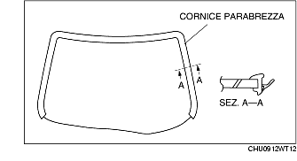
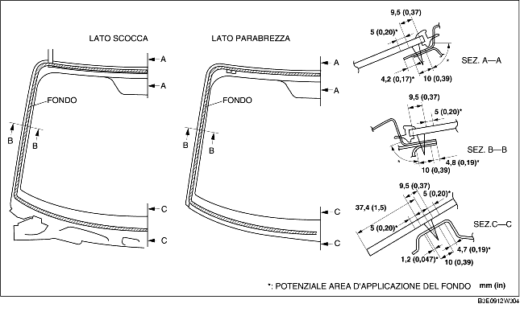

INSTALLAZIONE PARABREZZA
B3E091263900W02
-
Attenzione
-
• Usando un rasoio a mani nude ci si può ferire. Indossare sempre i guanti quando si usa un rasoio.
-
Avvertenza
-
• Se il sigillante si incrina o il vetro si stacca per effetto dello spostamento d'aria che si crea quando si apre/chiude una porta con tutti i finestrini chiusi, potrebbe risultare difficile installare il parabrezza. Lasciare tutti i finestrini aperti finché il parabrezza non è installato completamente.
1. Usando un rasoio, rimuovere il vecchio sigillante dal perimetro del telaio lasciandone uno strato residuo dello spessore di 1-2 mm (0,04-0,07 in).
2. Se in qualche punto il sigillante è stato asportato del tutto, sgrassare e applicare una mano di fondo, quindi lasciar asciugare per 30 minuti circa. Applicare quindi uno strato di sigillante di spessore pari a 2 mm (0,08 in).
3. Pulire e sgrassare una striscia larga circa 50 mm (1,97 cm) lungo il perimetro del parabrezza e la superficie d'attacco della carrozzeria.
4. Se si riutilizza il parabrezza, procedere come segue:
-
(1) Attaccare le spine nei punti segnati durante la rimozione.
-
(2) Installare la cornice del parabrezza.

5. Apllicare fondo per vetri sul vetro e un fondo per carrozzerie su carrozzeria e cornice, quindi lasciare asciugare per 30 minuti circa.
-
Avvertenza
-
• Non toccare la superficie interessata e impedire che questa si sporchi o si unga. Altrimenti il fondo potrebbe non aderire a dovere alla superficie del vetro e della carrozzeria, consentendo infiltrazioni.

6. Applicare il sigillante sulla superficie del vetro come mostrato in figura.
7. Inserire le spine di riferimento nella carrozzeria, quindi installare il parabrezza.
8. Premere le spine del parabrezza per impegnare le linguette nella carrozzeria.
9. Fare pressione sull'intero perimetro del vetro in modo che lo spazio dal labbro della cornice sia nella norma.
10. Installare quanto segue:
-
(1) Luce leggimappa (vedere RIMOZIONE/INSTALLAZIONE LUCE LEGGIMAPPA.)
-
(2) Arredamento montante A (vedere RIMOZIONE/INSTALLAZIONE ARREDAMENTO MONTANTE A.)
-
(3) Parasole (vedere RIMOZIONE/INSTALLAZIONE ALETTA PARASOLE.)
-
(4) Sensore pioggia (Veicoli con sistema automatico tergicristalli) (See RIMOZIONE/INSTALLAZIONE SENSORE PIOGGIA).
-
(5) Specchietto retrovisore interno (Vedere RIMOZIONE/INSTALLAZIONE SPECCHIETTO RETROVISORE INTERNO).
-
(6) Griglia plancia (vedere RIMOZIONE/INSTALLAZIONE GRIGLIA PLANCIA.)
-
(7) Braccio e spazzola tergiparabrezza (vedere RIMOZIONE/INSTALLAZIONE BRACCIO E SPAZZOLA TERGIPARABREZZA.)
11. Lasciare che il sigillante s'indurisca del tutto.
-
Tempo d'indurimento del sigillante: 24 ore